Snakes of Republic of the Congo
66 living snake species are recorded in the Republic of the Congo in SnakeList: 21 venomous and 45 non-venomous, from 10 families.
- 66living species
- 10families
Danger to people · tap a number to show only those snakes
Harmful = dangerously venomous + giant constrictors. Harmless = not venomous and not a giant constrictor. Mildly venomous snakes have no serious bites to people documented. Any snake can bite.
These totals count the unique living snake species SnakeList records in the Republic of the Congo. A species counts if it is recorded anywhere in the country, so not every snake lives in every part of it.
In SnakeList’s checklist filters
How many of the 66 living species here each filter in the SnakeList app picks out – tap a number to show only those snakes.
Snake family6 types, 10 families
Type
Family
Habitats13 habitat groups
Habitats are estimated from where each snake is recorded and what kind of snake it is, as in SnakeList; a snake can count in several.
Characteristics21 venomous, 3 constrictors
Constrictor and Non-constrictor count only snakes whose family or genus is documented as constricting or not; the rest are not documented.
Other filters2 popular, 15 rare
- 0extinct
Species
Showing 66 species
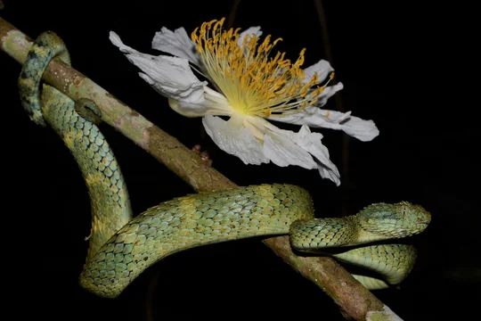
African Bush ViperAtheris squamigera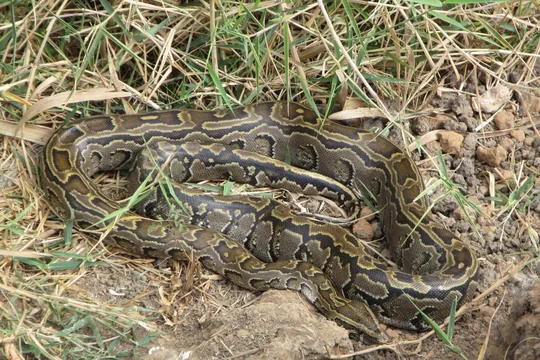
African Rock PythonPython sebae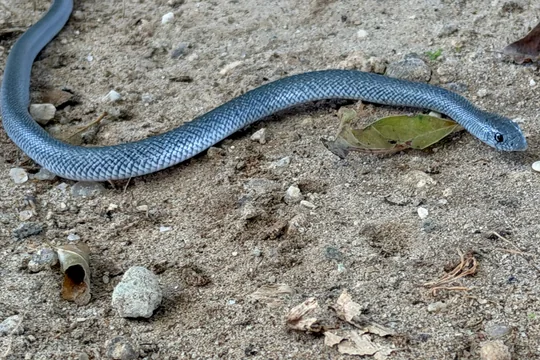
African Shovel-nosed SnakeScaphiophis albopunctatus Angolan Garter SnakeElapsoidea semiannulata
Angolan Garter SnakeElapsoidea semiannulata Angolan Shovel-snoutProsymna ambigua
Angolan Shovel-snoutProsymna ambigua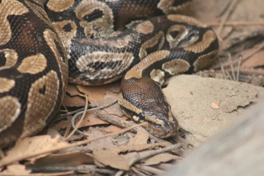
Ball PythonPython regius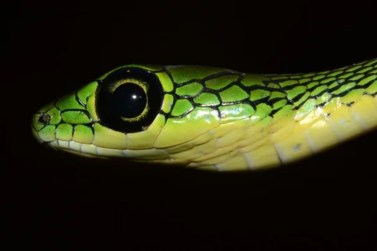
Black-lined Green SnakeHapsidophrys lineatus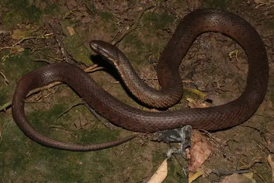
Blackbelly SnakeHydraethiops melanogaster Blandings Tree SnakeToxicodryas blandingii
Blandings Tree SnakeToxicodryas blandingii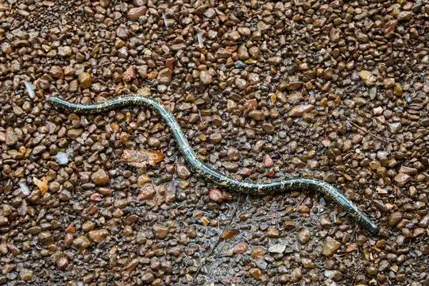
Blotched Blind SnakeAfrotyphlops congestus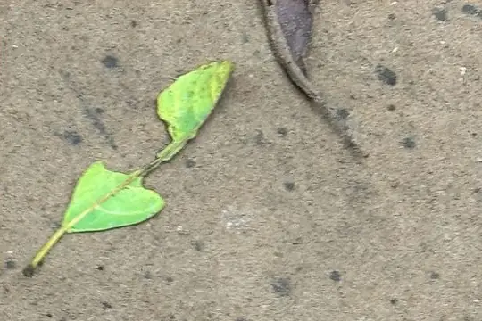
Bocourt's Snake-eaterPolemon bocourti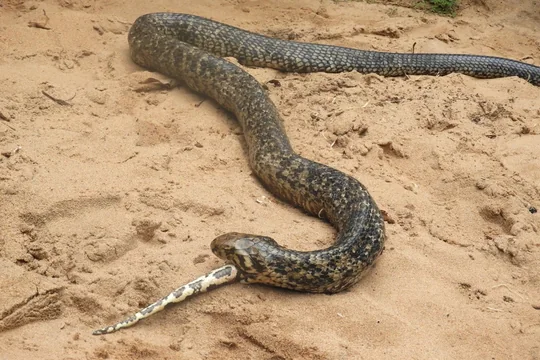
Brown Forest CobraNaja subfulva Calabar Ground PythonCalabaria reinhardtii
Calabar Ground PythonCalabaria reinhardtii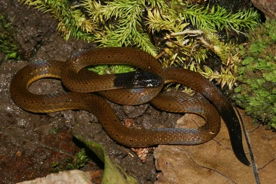
Cameroon Snake-EaterPolemon notatus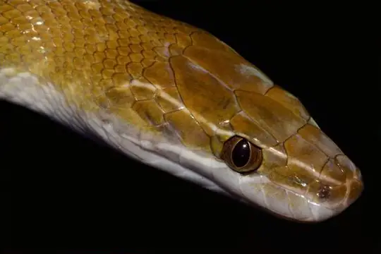
Coastal House Snake (littoralis)Boaedon littoralis Collared Snake-eaterPolemon collaris
Collared Snake-eaterPolemon collaris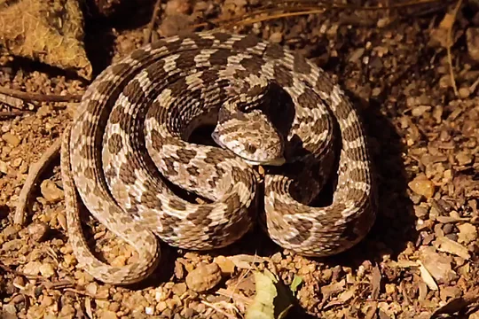
Common Egg EaterDasypeltis scabra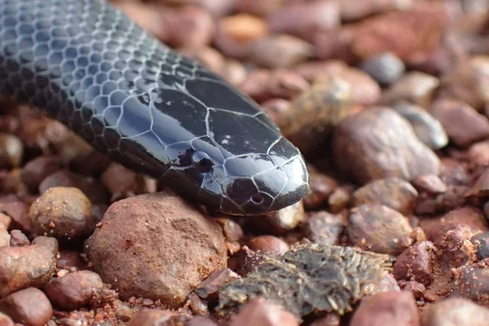
Congo Burrowing AspAtractaspis congica Congo File SnakeLimaformosa savorgnani
Congo File SnakeLimaformosa savorgnani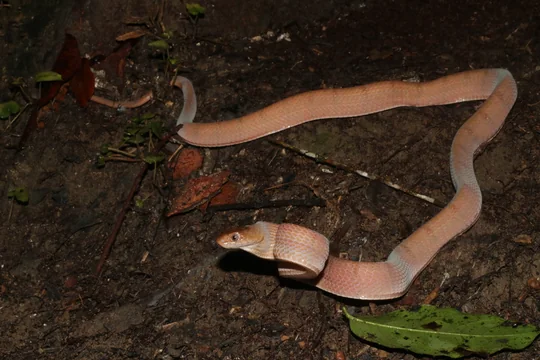
Diamondback Night StalkerToxicodryas adamanteus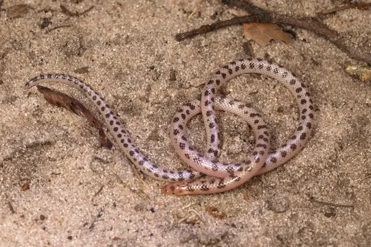
Elongate Quill-snouted SnakeXenocalamus mechowii Emerald Green SnakePhilothamnus heterodermus
Emerald Green SnakePhilothamnus heterodermus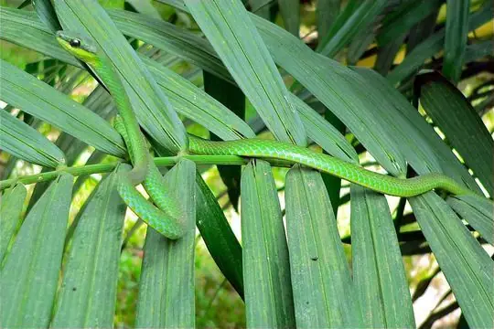
Emerald SnakeHapsidophrys smaragdinus Equatorial File SnakeMehelya poensis
Equatorial File SnakeMehelya poensis Flat Wolf SnakeLycophidion laterale
Flat Wolf SnakeLycophidion laterale Forest CobraNaja melanoleuca
Forest CobraNaja melanoleuca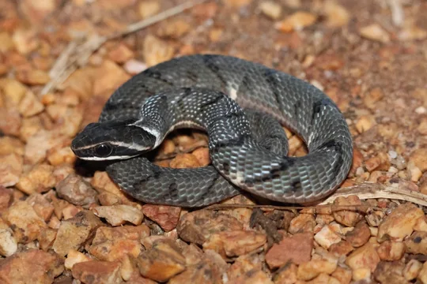
Forest Night AdderCausus lichtensteinii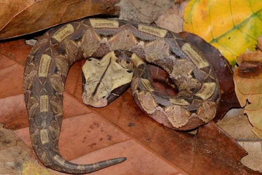
Gaboon ViperBitis gabonica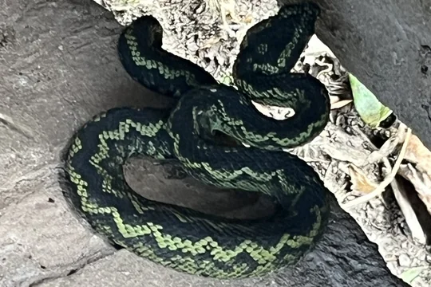
Great Lakes Bush ViperAtheris nitschei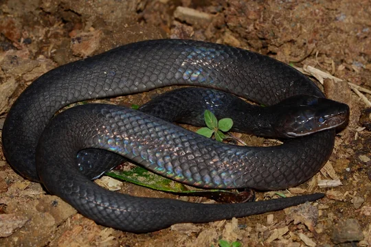
Günther's Black SnakeBothrolycus ater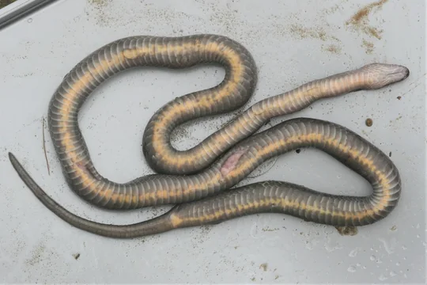
Hallowell's House SnakeBoaedon virgatus Irregular Green SnakePhilothamnus irregularis
Irregular Green SnakePhilothamnus irregularis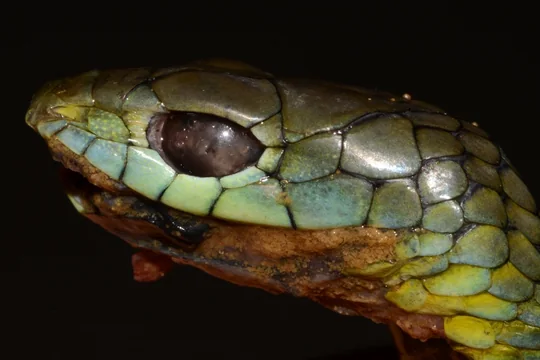
Jackson's Black Tree SnakeThrasops jacksonii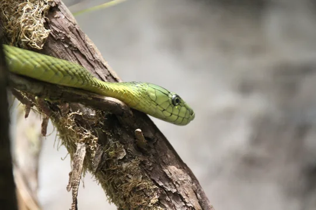
Jameson's MambaDendroaspis jamesoni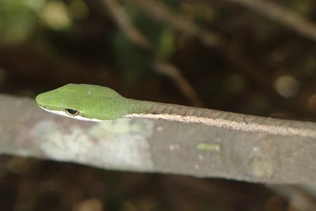
Kirtland's Twig SnakeThelotornis kirtlandii Laurent’s Green Tree-snakeDipsadoboa viridis
Laurent’s Green Tree-snakeDipsadoboa viridis- No photo yetLined Water SnakeLycodonomorphus subtaeniatus
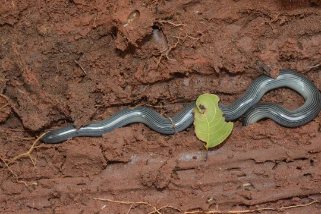
Lineolate Blind SnakeAfrotyphlops lineolatus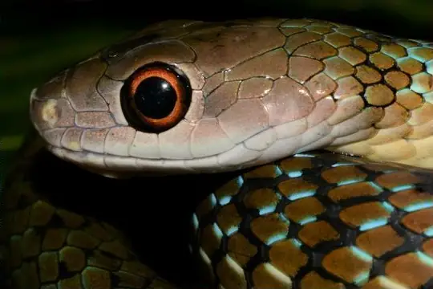
Mayombe Bush SnakePhilothamnus mayombensis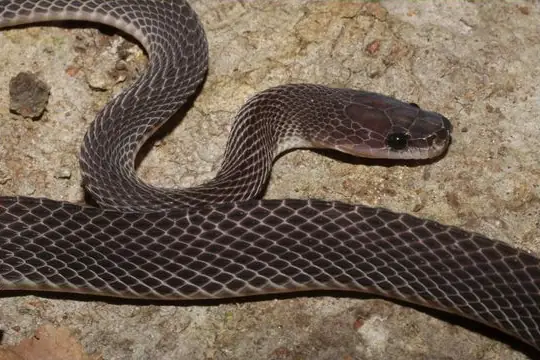
Mocquard's African Ground SnakeGonionotophis brussauxi Mole Viper (corpulenta)Atractaspis corpulenta
Mole Viper (corpulenta)Atractaspis corpulenta Mopane SnakeHemirhagerrhis nototaenia
Mopane SnakeHemirhagerrhis nototaenia Olive Grass RacerPsammophis phillipsii
Olive Grass RacerPsammophis phillipsii Olive House Snake (olivaceus)Boaedon olivaceus
Olive House Snake (olivaceus)Boaedon olivaceus Olive Marsh SnakeNatriciteres olivacea
Olive Marsh SnakeNatriciteres olivacea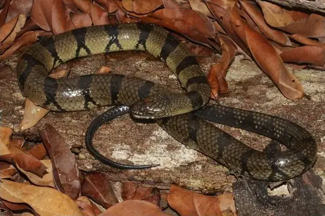
Ornate African Water SnakeGrayia ornata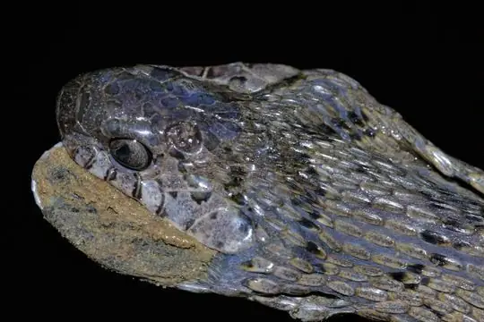
Palm Egg EaterDasypeltis palmarum Peri-Forest House SnakeBoaedon perisilvestris
Peri-Forest House SnakeBoaedon perisilvestris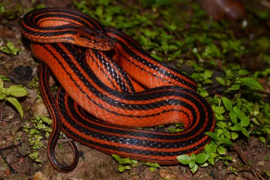
Red-Black Striped SnakeBothrophthalmus lineatus Red-lipped SnakeCrotaphopeltis hotamboeia
Red-lipped SnakeCrotaphopeltis hotamboeia Rhinoceros Viper (nasicornis)Bitis nasicornis
Rhinoceros Viper (nasicornis)Bitis nasicornis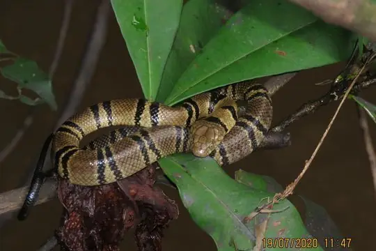
Ringed Water CobraNaja annulata Slender Green SnakePhilothamnus heterolepidotus
Slender Green SnakePhilothamnus heterolepidotus Small-eyed File SnakeMehelya stenophthalmus
Small-eyed File SnakeMehelya stenophthalmus Smith's African Water SnakeGrayia smithii
Smith's African Water SnakeGrayia smithii Spotted Night AdderCausus maculatus
Spotted Night AdderCausus maculatus- No photo yetSteinhaus' Worm SnakeAfrotyphlops steinhausi
 Striped Sand SnakePsammophis sibilans
Striped Sand SnakePsammophis sibilans Striped Wood SnakePhilothamnus dorsalis
Striped Wood SnakePhilothamnus dorsalis Thirteen-scaled Green SnakePhilothamnus carinatus
Thirteen-scaled Green SnakePhilothamnus carinatus Uganda House SnakeHormonotus modestus
Uganda House SnakeHormonotus modestus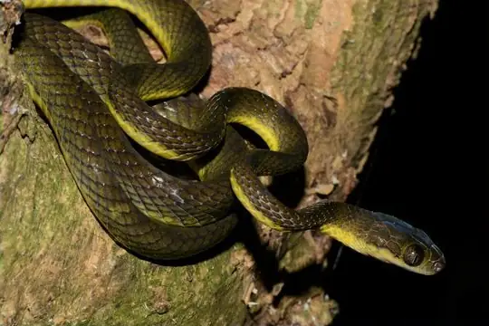
Underwood's Tree SnakeDipsadoboa underwoodi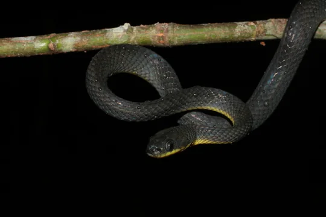
Weiler's Tree SnakeDipsadoboa weileri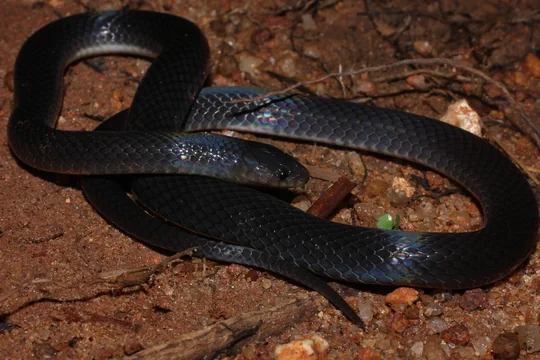
Western Forest Centipede-eaterAparallactus modestus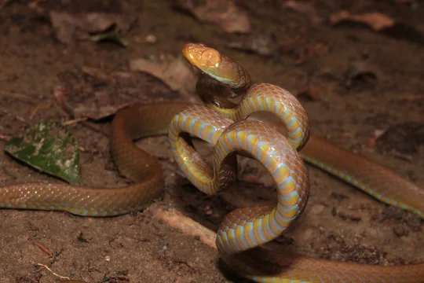
Yabassi Tree SnakeDipsadoboa duchesnii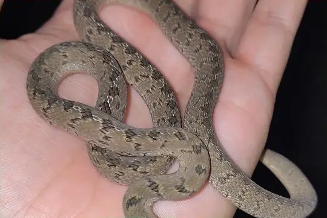
Dasypeltis congolensis
No snakes in Republic of the Congo match.
Republic of the Congo’s snakes in numbers
- Families: Colubridae 25, Lamprophiidae 13, Atractaspididae 7, Viperidae 6, Elapidae 5, Psammophiidae 3, Typhlopidae 3, Pythonidae 2, Boidae 1, Prosymnidae 1.
- 1 is recorded in no other country or territory in SnakeList: Mayombe Bush Snake.
How precisely they are recorded
Of the 66 living species recorded in the Republic of the Congo, 38 are recorded by department in SnakeList’s data; 28 are recorded only for the Republic of the Congo as a whole, so the department pages list them as possible rather than recorded. SnakeList records each species by department, not by exact spot, so a species listed for a department may live in only part of it.
Departments
The departments where SnakeList records snakes, with how many living species are recorded in each. Each page has its species, venomous snakes, families, the species found only there, its cities and neighbours.
- Brazzaville 1 species
- Cuvette-Ouest 11 species
- Kouilou 16 species
- Likouala 1 species
- Niari 12 species
- Pool 2 species
- Sangha 12 species
No place matches that.
Cities
Its biggest cities, biggest first. SnakeList records snakes by department, not by city, so each city page shows the species recorded in its department and, separately, those only possible there - not species confirmed in the city.
- Brazzaville Brazzaville Department
- Pointe-Noire Kouilou
No place matches that.